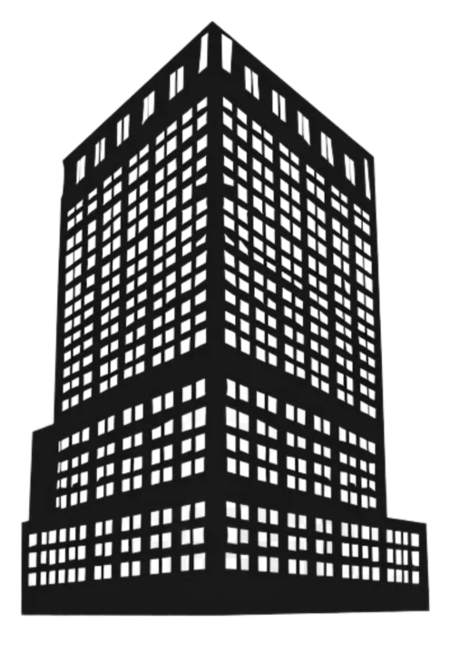
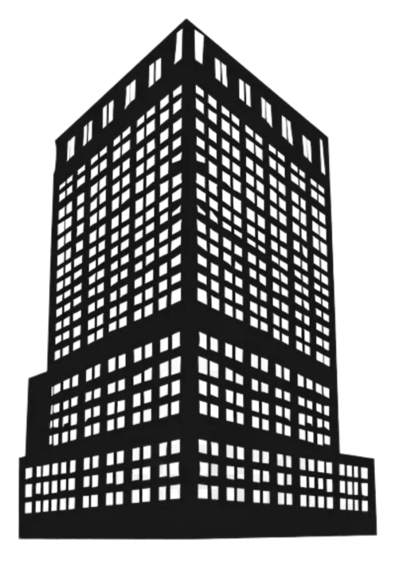
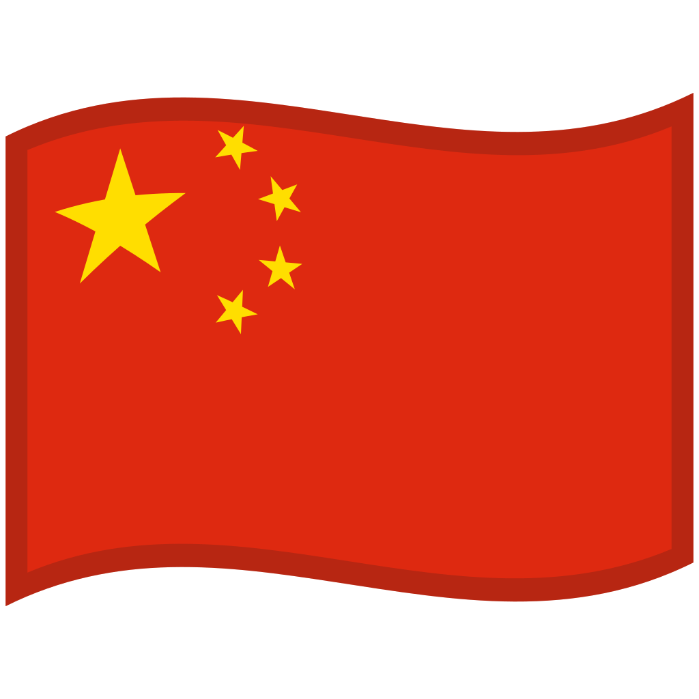

Ping an Finance Center
Ping An Finance Center to imponujący drapacz chmur w Shenzhen, jednym z najszybciej rozwijających się miast Chin. Z wysokością 599 metrów jest jednym z najwyższych budynków na świecie i najwyższym w Shenzhen, stanowiąc symbol nowoczesności oraz dynamicznego rozwoju regionu.
Budowa wieży zakończyła się w 2017 roku, a projekt architektoniczny charakteryzuje się elegancką, smukłą sylwetką oraz zastosowaniem nowoczesnych technologii, które gwarantują zarówno estetykę, jak i funkcjonalność. Ping An Finance Center mieści luksusowe biura, centra konferencyjne oraz hotel, a także strefy handlowe i rekreacyjne.
Wieża została zaprojektowana z myślą o efektywności energetycznej oraz zrównoważonym rozwoju – wykorzystuje zaawansowane systemy wentylacji, oświetlenia i zarządzania energią, co czyni ją jednym z najbardziej ekologicznych budynków w regionie.
Ping An Finance Center jest nie tylko centrum biznesowym, ale także symbolem aspiracji Shenzhen do bycia globalnym graczem na rynku finansowym i technologicznym. Jego imponująca wysokość i nowoczesny design przyciągają uwagę mieszkańców oraz turystów, stanowiąc ważny punkt orientacyjny w panoramie miasta.

Przypisy:
- Wikipedia.com - https://pl.wikipedia.org/wiki/Biskupiec
- Wikipedia.com - By Charlie fong - Own work, CC BY-SA 4.0, Link